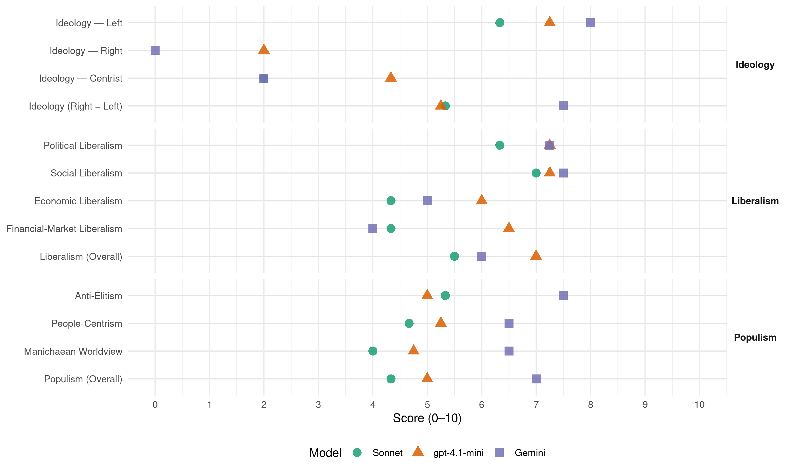

SDP BiH (Bosnia-Herzegovina, 2010)
manifesto_id 79321_201010
Get full text: This site shows derived annotations and short verbatim quotes only. The full manifesto text is © Manifesto Project / WZB — obtain it via manifesto-project.wzb.eu using the manifesto_id above.
Headline scores
| Dimension | Sonnet | gpt-4.1-mini | Gemini |
|---|---|---|---|
| Populism (Overall) | 4.3 | 5.0 | 7.0 |
| Anti-Elitism | 5.3 | 5.0 | 7.5 |
| People-Centrism | 4.7 | 5.2 | 6.5 |
| Manichaean Worldview | 4.0 | 4.8 | 6.5 |
| Ideology (Right − Left) | 5.3 | 5.2 | 7.5 |
| Liberalism (Overall) | 5.5 | 7.0 | 6.0 |
| Political Liberalism | 6.3 | 7.2 | 7.2 |
| Social Liberalism | 7.0 | 7.2 | 7.5 |
| Economic Liberalism | 4.3 | 6.0 | 5.0 |
| Financial-Market Liberalism | 4.3 | 6.5 | 4.0 |
Evidence per dimension
Economic Liberalism
Gemini · score 4.0 · mixed · chunk 1
“tržišne ekonomije, sa značajnim strateškim privrednim”
izgradnjom socijalne države, tržišne ekonomije, sa značajnim strateškim privrednim subjekatima u većinskom državnim vlasništvu
Gemini · score 4.0 · mixed · chunk 2
“socijalne države tržišne ekonomije sa značajnim privrednim”
osnovnim ciljem izgradnje socijalne države tržišne ekonomije sa značajnim privrednim subjektima u većinskom državnom vlasništvu (energetika, komunikacije
Gemini · score 4.0 · verified · chunk 3
“poticajnost poduzetništva i odgovornost vlasništva”
korist svojih stranačkih dužnosnika i klijenata. Solidarnost i pravednost u svijetu rada, poticajnost poduzetništva i odgovornost vlasništva, šanse za školovanje
Gemini · score 6.0 · verified · chunk 4
“onemogućiti monopoliziranje tržišta od strane pojedinih proizvođača”
Time će se omogućiti veći izbor lijekova za ordinirajućeg ljekara i pacijenta, a istovremeno onemogućiti monopoliziranje tržišta od strane pojedinih proizvođača lijekova.
gpt-4.1-mini · score 7.0 · verified · chunk 1
“izgradnju socijalne države tržišne ekonomije sa značajnim privrednim subjektima u većinskom državnom vlasništvu”
…program izgradnje socijalne države tržišne ekonomije sa značajnim privrednim subjektima u većinskom državnom vlasništvu (energetika, komunikacije, javna dobra) i izgradnjom institucija za reguliranje tržišta u uslovima miješane ekonomije…
gpt-4.1-mini · score 6.0 · verified · chunk 2
“privrednim subjektima u većinskom državnom vlasništvu”
izgradnje socijalne države tržišne ekonomije sa značajnim privrednim subjektima u većinskom državnom vlasništvu (energetika, komunikacije, javna dobra) i izgradnjom institucija za reguliranje tržišta u uslovima miješane ekonomije
gpt-4.1-mini · score 6.0 · verified · chunk 3
“poticajnost poduzetništva i odgovornost vlasništva”
Solidarnost i pravednost u svijetu rada, poticajnost poduzetništva i odgovornost vlasništva, šanse za školovanje i obrazovanje, pomoć u ostvarivanju stambene sigurnosti obitelji i pojedinca, zaštita zdravlja kao briga države, bezbrižna mladost i dostojanstvena starost, briga društva za slabije i nezaštićene, obzirnost prema drugima i drugačijima kao bogatstvu društva, to je SDP-ov program za modernu Bosnu i Hercegovinu.
gpt-4.1-mini · score 5.0 · verified · chunk 4
“povećanje poreza, i to kroz model progresivnog oporezivanja, povećaju i izvori finansiranja modela socijalnog blagostanja”
…Smatrate li da predložena rješenja mogu imati pasivizirajući utjecaj na nezaposlene? Zašto? Politika zdravstva SDP-a BiH za Opće izbore 2010. godine Vladajuća parlamentarna većina nesposobna… povećanje poreza, i to kroz model progresivnog oporezivanja, povećaju i izvori finansiranja modela socijalnog blagostanja u BiH?…
Sonnet · score 4.0 · verified · chunk 2
“izgradnje socijalne države tržišne ekonomije”
osnovnim ciljem izgradnje socijalne države tržišne ekonomije sa značajnim privrednim subjektima u većinskom državnom vlasništvu (energetika, komunikacije, javna dobra)
Sonnet · score 4.0 · verified · chunk 3
“poticajnost poduzetništva i odgovornost vlasništva”
Solidarnost i pravednost u svijetu rada, poticajnost poduzetništva i odgovornost vlasništva, šanse za školovanje i obrazovanje
Sonnet · score 5.0 · verified · chunk 4
“razvoj povoljnog poslovnog ambijenta”
politika zapošljavanja, politika razvoja povoljnog poslovnog ambijenta, poreska politika, politika uspostave efikasnije administracije
Financial-Market Liberalism
Gemini · score 3.0 · verified · chunk 1
“agenciju za bankarstvo na nivou zemlje”
Uspostavićemo agenciju za bankarstvo na nivou zemlje i proširiti joj nadležnost u oblasti regulacije, nadzora i kontrole poslovanja banaka
Gemini · score 5.0 · verified · chunk 2
“regulaciju, nadzor i kontrolu tržišta finansijskih proizvoda”
uspostaviti tijelo na nivou Zemlje za regulaciju, nadzor i kontrolu tržišta finansijskih proizvoda. U oblasti fiskalne politike
gpt-4.1-mini · score 6.0 · verified · chunk 1
“uspostaviti tijelo na nivou Zemlje za regulaciju, nadzor i kontrolu tržišta finansijskih proizvoda”
…uspostaviti tijelo na nivou Zemlje za regulaciju, nadzor i kontrolu tržišta finansijskih proizvoda. Postojeća vlast je svjesno deregulirala, odnosno ne uspostavlja instrumente regulacije tržišta finansijskih proizvoda….
gpt-4.1-mini · score 7.0 · verified · chunk 2
“uspostaviti agenciju za bankarstvo na nivou Zemlje”
izjednačićemo u pogledu uslova poslovanja, državne i privatne komercijalne banke, uspostaviti agenciju za bankarstvo na nivou Zemlje, ciljeve, strategiju i politike poslovanja razvojnih banaka uskladiti sa ciljevima ekonomske politike i uspostaviti efikasniji nadzor nad upravljanjem, rukovođenjem i poslovanjem ovih banaka, uspostaviti tijelo na nivou Zemlje za regulaciju, nadzor i kontrolu tržišta finansijskih proizvoda
Sonnet · score 4.0 · verified · chunk 2
“uspostaviti tijelo na nivou Zemlje za regulaciju, nadzor i kontrolu tržišta finansijskih proizvoda”
izjednačićemo u pogledu uslova poslovanja, državne i privatne komercijalne banke, uspostaviti agenciju za bankarstvo na nivou Zemlje… uspostaviti tijelo na nivou Zemlje za regulaciju, nadzor i kontrolu tržišta finansijskih proizvoda
Sonnet · score 4.0 · verified · chunk 3
“povoljni krediti za pokretanje sopstvenog biznisa”
Demobilisanim borcima i ratnim vojnim invalidima će biti omogućeni povoljni krediti za pokretanje sopstvenog biznisa uz minimalnu kamatu od 3%
Sonnet · score 5.0 · verified · chunk 4
“kroz model progresivnog oporezivanja”
da se kroz povećanje poreza, i to kroz model progresivnog oporezivanja, povećaju i izvori finansiranja modela socijalnog blagostanja
Political Liberalism
Gemini · score 7.0 · verified · chunk 1
“jednakost pred zakonom”
zakonodavstvom i međunarodnim standardima, a ne za robovlasničke odnose, za manje poreze građana i privrednih društava i jednakost pred zakonom, a ne za
Gemini · score 8.0 · verified · chunk 2
“demokratskog društva koje se zasniva na trodjelnoj”
predstavlja treći stub demokratskog društva koje se zasniva na trodjelnoj podjeli vlasti. Prema sadašnjim ustavnim rješenjima
Gemini · score 8.0 · verified · chunk 3
“osnažene demokracije, vladavine prava”
zajedničku budućnost stabilnog gospodarskog razvitka, osnažene demokracije, vladavine prava, europskog standarda i života
Gemini · score 6.0 · verified · chunk 4
“donošenjem Zakona o zdravstvenoj zaštiti na nivou BiH”
Reformi zdravstva BiH, koja treba da rezultira donošenjem Zakona o zdravstvenoj zaštiti na nivou BiH, odnosno formiranjem Ministarstva za zdravlje BiH.
gpt-4.1-mini · score 7.0 · verified · chunk 1
“izgradnju institucija i provođenju reformi koje će nam omogućiti da postanemo što prije dijelom unutarnjeg tržišta Evropske unije”
…sve svoje snage usmjeriti, prije svega, na ispunjavanje uslova iz Privremenog sporazuma o stabilizaciji i pridruživanju sa EU i izgradnju institucija i provođenju reformi koje će nam omogućiti da postanemo što prije dijelom unutarnjeg tržišta Evropske unije….
gpt-4.1-mini · score 8.0 · verified · chunk 2
“vladavini prava”
Učinci korupcije -prepreka demokraciji i vladavini prava -oslabljuje gospodarski napredak po ekonomske i socijalne odnose
gpt-4.1-mini · score 7.0 · verified · chunk 3
“osnažene demokracije, vladavine prava, europskog standarda i života za sve građane”
Sigurna, solidarna i prosperitetna Bosna i Hercegovina - to je Bosna i Hercegovina u kojoj možemo ostvariti naše radne i stvaralačke sposobnosti, te s povjerenjem gledati u našu vlastitu i zajedničku budućnost stabilnog gospodarskog razvitka, osnažene demokracije, vladavine prava, europskog standarda i života za sve građane.
gpt-4.1-mini · score 7.0 · verified · chunk 4
“SDP BiH će se zalagati da svi građani Bosne i Hercegovine imaju pristup ostvarenju zdravstvenih prava”
…Zbog toga, SDP BiH će se zalagati da svi građani Bosne i Hercegovine imaju pristup ostvarenju zdravstvenih prava i jednakost u korištenju zdravstvene zaštite. U uslovima velikih demografskih i epidemioloških promjena…
Sonnet · score 7.0 · verified · chunk 2
“vladavine prava, europskog standarda i života”
osnažene demokracije, vladavine prava, europskog standarda i života za sve građane. Zadatak demokratske vlasti je pomoći, podržati i zaštititi
Sonnet · score 7.0 · verified · chunk 3
“osnažene demokracije, vladavine prava”
stabilnog gospodarskog razvitka, osnažene demokracije, vladavine prava, europskog standarda i života za sve građane.
Sonnet · score 5.0 · verified · chunk 4
“neobavezujući zakoni između države, entiteta”
organizacija, struktura, neobavezujući zakoni između države, entiteta i kantona, dovode do granice kolapsa
Liberalism (Overall)
Gemini · score 5.0 · verified · chunk 1
“jednakost pred zakonom”
zakonodavstvom i međunarodnim standardima, a ne za robovlasničke odnose, za manje poreze građana i privrednih društava i jednakost pred zakonom, a ne za
Gemini · score 6.0 · verified · chunk 2
“demokratskog društva koje se zasniva na trodjelnoj”
predstavlja treći stub demokratskog društva koje se zasniva na trodjelnoj podjeli vlasti. Prema sadašnjim ustavnim rješenjima
Gemini · score 7.0 · verified · chunk 3
“osnažene demokracije, vladavine prava”
zajedničku budućnost stabilnog gospodarskog razvitka, osnažene demokracije, vladavine prava, europskog standarda i života
Gemini · score 6.0 · verified · chunk 4
“onemogućiti monopoliziranje tržišta od strane pojedinih proizvođača”
Time će se omogućiti veći izbor lijekova za ordinirajućeg ljekara i pacijenta, a istovremeno onemogućiti monopoliziranje tržišta od strane pojedinih proizvođača lijekova.
gpt-4.1-mini · score 7.0 · verified · chunk 1
“izgradnju institucija i provođenju reformi koje će nam omogućiti da postanemo što prije dijelom unutarnjeg tržišta Evropske unije”
…sve svoje snage usmjeriti, prije svega, na ispunjavanje uslova iz Privremenog sporazuma o stabilizaciji i pridruživanju sa EU i izgradnju institucija i provođenju reformi koje će nam omogućiti da postanemo što prije dijelom unutarnjeg tržišta Evropske unije….
gpt-4.1-mini · score 7.0 · verified · chunk 2
“izgradnje socijalne države tržišne ekonomije sa značajnim privrednim subjektima u većinskom državnom vlasništvu”
desničarskim i neoliberalnim nastojanjima izgradnje „ničim obuzdanog i nereguliranog“ kapitalizma i društva etničke totalitarne „demokratije“ i siromaštva. To ćemo postići, između ostalog, reformom ekonomskog sistema u skladu sa definiranim mjerama u ovoj oblasti sa osnovnim ciljem izgradnje socijalne države tržišne ekonomije sa značajnim privrednim subjektima u većinskom državnom vlasništvu (energetika, komunikacije, javna dobra) i izgradnjom institucija za reguliranje tržišta u uslovima miješane ekonomije
gpt-4.1-mini · score 7.0 · verified · chunk 3
“osnažene demokracije, vladavine prava, europskog standarda i života za sve građane”
Sigurna, solidarna i prosperitetna Bosna i Hercegovina - to je Bosna i Hercegovina u kojoj možemo ostvariti naše radne i stvaralačke sposobnosti, te s povjerenjem gledati u našu vlastitu i zajedničku budućnost stabilnog gospodarskog razvitka, osnažene demokracije, vladavine prava, europskog standarda i života za sve građane.
gpt-4.1-mini · score 7.0 · verified · chunk 4
“SDP BiH će se zalagati da svi građani Bosne i Hercegovine imaju pristup ostvarenju zdravstvenih prava”
…Zbog toga, SDP BiH će se zalagati da svi građani Bosne i Hercegovine imaju pristup ostvarenju zdravstvenih prava i jednakost u korištenju zdravstvene zaštite. U uslovima velikih demografskih i epidemioloških promjena…
Sonnet · score 5.0 · verified · chunk 2
“osnažene demokracije, vladavine prava”
s povjerenjem gledati u našu vlastitu i zajedničku budućnost stabilnog gospodarskog razvitka, osnažene demokracije, vladavine prava, europskog standarda
Sonnet · score 6.0 · verified · chunk 3
“osnažene demokracije, vladavine prava”
stabilnog gospodarskog razvitka, osnažene demokracije, vladavine prava, europskog standarda i života za sve građane.
Sonnet · score 5.0 · mixed · chunk 4
“veća konkurentnost, a samim tim i značajne uštede”
zasnovanog na principu referalnih cijena, čime će se postići veća konkurentnost, a samim tim i značajne uštede na nivou Fondova
Anti-Elitism
Gemini · score 8.0 · verified · chunk 1
“bogaćenje nacionalnih oligarhija”
Rezultat takvog vođenja ekonomije je neopravdano, na kriminalu zasnovano, bogaćenje nacionalnih oligarhija, uz istovremeno sve veći broj nezaposlenih
Gemini · score 8.0 · verified · chunk 2
“vladajuća politička elita osobni interes stavlja iznad”
Uzroci korupcije VLAST sustav vlasti generira korupciju vladajuća politička elita osobni interes stavlja iznad interesa društvene zajednice korumpirana i kriminalizirana
Gemini · score 8.0 · verified · chunk 3
“u korist svojih stranačkih dužnosnika i klijenata”
Bosni i Hercegovini ne vlada u korist svojih građana, nego u korist svojih stranačkih dužnosnika i klijenata. Solidarnost i pravednost
Gemini · score 6.0 · verified · chunk 4
“politike koje su ignorisale ove goruće probleme”
Na žalost, mi smo u proteklim godinama imali na sceni politike koje su ignorisale ove goruće probleme kao da će oni sami od sebe nestati.
gpt-4.1-mini · score 7.0 · verified · chunk 1
“desničarskim etno-nacionalnog koncepta „razornog kazino-kapitalizma”“
…program izgradnje socijalne države, tržišne ekonomije sa značajnim privrednim subjektima u većinskom državnom vlasništvu i potrebnim nivoom reguliranja tržišta u uvjetima miješane ekonomije, za razliku od desničarskog etno-nacionalnog koncepta „razornog kazino-kapitalizma” koji je svojim „kreativnim razaranjem” doveo do moralnog sloma društva, nedopustivo visokog nivoa kriminala i korupcije,…
gpt-4.1-mini · score 7.0 · verified · chunk 2
“vladajuća politička elita osobni interes stavlja iznad interesa društvene zajednice”
VLAST sustav vlasti generira korupciju vladajuća politička elita osobni interes stavlja iznad interesa društvene zajednice korumpirana i kriminalizirana birokratizirana nedostatak znanja i odgovornosti nedostatak političke volje za borbu protiv korupcije selekcija prema sposobnostima zamijenjena je stranačkim ključevima raspodjele položaja i osobnim kriterijima poslušnosti -vladajuće političke elite, skrivajući se iza interesa naroda, kroz institucije sustava legaliziraju korupciju - korupcija, nepotizam i zlouporaba vlasti – temelji na kojima počiva bh društvo
gpt-4.1-mini · score 3.0 · verified · chunk 3
“Današnja vlast u Bosni i Hercegovini ne vlada u korist svojih građana, nego u korist svojih stranačkih dužnosnika i klijenata”
Vlast koja nije socijalno osjetljiva, pravična i solidarna, ne osigurava perspektivu. Ona vlada nad građanima, ali ne za građane. Današnja vlast u Bosni i Hercegovini ne vlada u korist svojih građana, nego u korist svojih stranačkih dužnosnika i klijenata. Solidarnost i pravednost u svijetu rada, poticajnost poduzetništva i odgovornost vlasništva, šanse za školovanje i obrazovanje, pomoć u ostvarivanju stambene sigurnosti obitelji i pojedinca, zaštita zdravlja kao briga države, bezbrižna mladost i dostojanstvena starost, briga društva za slabije i nezaštićene, obzirnost prema drugima i drugačijima kao bogatstvu društva, to je SDP-ov program za modernu Bosnu i Hercegovinu.
gpt-4.1-mini · score 3.0 · verified · chunk 4
“Mi želimo ulagati u ljude, jer ih mi ne posmatramo kao trošak već kao investiciju”
…Za to je potrebno mnogo vremena i strpljenja. Naša je procjena da ovaj cilj možemo postići u roku od četiri godine. Mi želimo ulagati u ljude, jer ih mi ne posmatramo kao trošak već kao investiciju, investiciju koja se vraća svima nama. Zato materijalna i svaka druga podrška…
Sonnet · score 6.0 · verified · chunk 2
“vladajuća politička elita osobni interes stavlja iznad interesa društvene zajednice”
VLAST sustav vlasti generira korupciju vladajuća politička elita osobni interes stavlja iznad interesa društvene zajednice korumpirana i kriminalizirana
Sonnet · score 6.0 · verified · chunk 3
“prevareni su i opljačkani u privatizaciji”
Uskraćena su im osnovna prava iz rada i po osnovu rada, izloženi su drastičnoj eksploataciji, prevareni su i opljačkani u privatizaciji. SDP BiH će:
Sonnet · score 4.0 · verified · chunk 4
“Vladajuća parlamentarna većina nesposobna, nekompetentna”
Politika zdravstva SDP-a BiH za Opće izbore 2010. godine: Vladajuća parlamentarna većina nesposobna, nekompetentna, neiskrena u namjerama da napravi pomake
Ideology — Centrist
Gemini · score 2.0 · verified · chunk 1
“povećanje standarda građana”
osnovni cilj našega političkog djelovanja, za razliku od nacionalnih stranaka, povećanje standarda građana Bosne i Hercegovine
gpt-4.1-mini · score 3.0 · verified · chunk 1
“pozivamo građane naše zemlje da svoj glas daju SDP-u jer time ustvari glasaju za zajednički život”
…pozivamo građane naše zemlje da svoj glas daju SDP-u jer time ustvari glasaju za zajednički život i veći standard, a ne za podjele i siromaštvo,…
gpt-4.1-mini · score 6.0 · verified · chunk 3
“Mi želimo Bosnu i Hercegovinu sigurnosti, solidarnosti i prosperiteta”
Zašto glasati za sdp bih? Mi želimo Bosnu i Hercegovinu sigurnosti, solidarnosti i prosperiteta. Ostvarivanje toga cilja je glavna zadaća socijaldemokracije. To je i svrha našeg političkog djelovanja. Bez socijalne demokracije nema socijalno odgovorne vlasti, bez SDP-a nema socijaldemokracije.
gpt-4.1-mini · score 4.0 · verified · chunk 4
“Na žalost, mi smo u proteklim godinama imali na sceni politike koje su ignorisale ove goruće probleme”
…Na žalost, mi smo u proteklim godinama imali na sceni politike koje su ignorisale ove goruće probleme kao da će oni sami od sebe nestati. Ne, sa tim problemima se moramo suočiti i tražiti najbolja moguća rješenja…
Sonnet · score 2.0 · verified · chunk 2
“za razliku od nacionalnih stranaka”
osnovni cilj našega političkog djelovanja, za razliku od nacionalnih stranaka, povećanje standarda građana Bosne i Hercegovine
Sonnet · score 2.0 · verified · chunk 3
“više posla i više pravde za sve”
SDP BiH već godinama insistira na odgovornoj politici koja ce donijeti “više posla i više pravde za sve.”
Sonnet · score 2.0 · verified · chunk 4
“svakom građaninu Bosne i Hercegovine”
dostupnosti kvalitetnih zdravstvenih usluga svakom građaninu Bosne i Hercegovine kao kranjem korisniku usluge.
Ideology — Left
Gemini · score 9.0 · verified · chunk 1
“izgradnjom socijalne države”
napuštanjem modela tzv. tranzicijskog pljačkaškog kapitalizma („kazino kapitalizma“) i izgradnjom socijalne države, tržišne ekonomije
Gemini · score 8.0 · verified · chunk 2
“suprotstavljati desničarskim i neoliberalnim nastojanjima”
Socijaldemokratska partija Bosne i Hercegovine će se, svim demokratskim sredstvima, suprotstavljati desničarskim i neoliberalnim nastojanjima izgradnje „ničim obuzdanog i nereguliranog“ kapitalizma
Gemini · score 8.0 · verified · chunk 3
“štite interesi radnika, a ne krupnog kapitala”
socijalnu državu u kojoj se prvenstveno štite interesi radnika, a ne krupnog kapitala i profitera zašto glasati za sdp
Gemini · score 7.0 · verified · chunk 4
“kroz model progresivnog oporezivanja, povećaju i izvori”
Kakvo je vaše mišljenje o tome da se kroz povećanje poreza, i to kroz model progresivnog oporezivanja, povećaju i izvori finansiranja modela socijalnog blagostanja u BiH?
gpt-4.1-mini · score 8.0 · verified · chunk 1
“izgradnje socijalne države tržišne ekonomije sa značajnim privrednim subjektima u većinskom državnom vlasništvu”
…program izgradnje socijalne države tržišne ekonomije sa značajnim privrednim subjektima u većinskom državnom vlasništvu (energetika, komunikacije, javna dobra) i izgradnjom institucija za reguliranje tržišta u uslovima miješane ekonomije…
gpt-4.1-mini · score 7.0 · verified · chunk 2
“izgradnje socijalne države tržišne ekonomije sa značajnim privrednim subjektima u većinskom državnom vlasništvu”
desničarskim i neoliberalnim nastojanjima izgradnje „ničim obuzdanog i nereguliranog“ kapitalizma i društva etničke totalitarne „demokratije“ i siromaštva. To ćemo postići, između ostalog, reformom ekonomskog sistema u skladu sa definiranim mjerama u ovoj oblasti sa osnovnim ciljem izgradnje socijalne države tržišne ekonomije sa značajnim privrednim subjektima u većinskom državnom vlasništvu (energetika, komunikacije, javna dobra) i izgradnjom institucija za reguliranje tržišta u uslovima miješane ekonomije
gpt-4.1-mini · score 7.0 · verified · chunk 3
“SDP BiH će urediti zakonodavstvo i osigurati odgovorne i stručne institucije kojim će se garantirati pravo na rad, pravo na pravične plaće, pravo na zaštitu na radu”
SDP BiH će: -osigurati puno ostvarivanje radničkih prava, jer je to temeljna pretpostavka razvoja demokratskog (inovativnog) društva, društva socijalne pravde, jednakosti i solidarnosti, s ciljem da će SDP BiH urediti zakonodavstvo i osigurati odgovorne i stručne institucije kojim će se garantirati pravo na rad, pravo na pravične plaće, pravo na zaštitu na radu…… -činiti organizirane napore za stvaranje uvjeta za potpunu slobodu djelovanja, organiziranja i okupljanja -utjecati na proces donošenje kolektivnih ugovora u skladu sa normama MOR-a i Europske socijalne povelje -otvoriti javni socijalni dijalog izmedju rada, kapitala i vlada, uz uključivanje svih faktora društva, nevladinih organizacija i svih onih koji su zainteresirani za socijalni dijalog i socijalno poboljšanje
gpt-4.1-mini · score 7.0 · verified · chunk 4
“SDP BiH se, kao politička partija, zalaže za mnogo pravedniju i pametniju raspodjelu sredstava”
…Pitanje tih sredstava je pitanje politike raspodjele postojećih sredstava. SDP BiH se, kao politička partija, zalaže za mnogo pravedniju i pametniju raspodjelu sredstava. Mi želimo ulagati u ljude, jer ih mi ne posmatramo kao trošak već kao investiciju…
Sonnet · score 6.0 · verified · chunk 2
“izgradnje socijalne države tržišne ekonomije”
osnovnim ciljem izgradnje socijalne države tržišne ekonomije sa značajnim privrednim subjektima u većinskom državnom vlasništvu
Sonnet · score 7.0 · verified · chunk 3
“štite interesi radnika, a ne krupnog kapitala”
zalagati se za BiH kao socijalnu državu u kojoj se prvenstveno štite interesi radnika, a ne krupnog kapitala i profitera
Sonnet · score 6.0 · verified · chunk 4
“ravnopravniju raspodjelu sredstava”
solidarno pomaganje i onih koji su iz raznih razloga našli u nepovoljnom položaju… i ravnopravniju raspodjelu sredstava.
Ideology (Right − Left)
Gemini · score 8.0 · verified · chunk 1
“izgradnjom socijalne države”
napuštanjem modela tzv. tranzicijskog pljačkaškog kapitalizma („kazino kapitalizma“) i izgradnjom socijalne države, tržišne ekonomije
Gemini · score 8.0 · verified · chunk 2
“suprotstavljati desničarskim i neoliberalnim nastojanjima”
Socijaldemokratska partija Bosne i Hercegovine će se, svim demokratskim sredstvima, suprotstavljati desničarskim i neoliberalnim nastojanjima izgradnje „ničim obuzdanog i nereguliranog“ kapitalizma
Gemini · score 8.0 · verified · chunk 3
“štite interesi radnika, a ne krupnog kapitala”
socijalnu državu u kojoj se prvenstveno štite interesi radnika, a ne krupnog kapitala i profitera zašto glasati za sdp
Gemini · score 6.0 · verified · chunk 4
“kroz model progresivnog oporezivanja, povećaju i izvori”
Kakvo je vaše mišljenje o tome da se kroz povećanje poreza, i to kroz model progresivnog oporezivanja, povećaju i izvori finansiranja modela socijalnog blagostanja u BiH?
gpt-4.1-mini · score 6.0 · verified · chunk 1
“desničarskim etno-nacionalnog koncepta „razornog kazino-kapitalizma”“
…za razliku od desničarskog etno-nacionalnog koncepta „razornog kazino-kapitalizma” koji je svojim „kreativnim razaranjem” doveo do moralnog sloma društva,…
gpt-4.1-mini · score 5.0 · verified · chunk 2
“izgradnje socijalne države tržišne ekonomije sa značajnim privrednim subjektima u većinskom državnom vlasništvu”
desničarskim i neoliberalnim nastojanjima izgradnje „ničim obuzdanog i nereguliranog“ kapitalizma i društva etničke totalitarne „demokratije“ i siromaštva. To ćemo postići, između ostalog, reformom ekonomskog sistema u skladu sa definiranim mjerama u ovoj oblasti sa osnovnim ciljem izgradnje socijalne države tržišne ekonomije sa značajnim privrednim subjektima u većinskom državnom vlasništvu (energetika, komunikacije, javna dobra) i izgradnjom institucija za reguliranje tržišta u uslovima miješane ekonomije
gpt-4.1-mini · score 5.0 · verified · chunk 3
“SDP BiH će urediti zakonodavstvo i osigurati odgovorne i stručne institucije kojim će se garantirati pravo na rad, pravo na pravične plaće, pravo na zaštitu na radu”
SDP BiH će: -osigurati puno ostvarivanje radničkih prava, jer je to temeljna pretpostavka razvoja demokratskog (inovativnog) društva, društva socijalne pravde, jednakosti i solidarnosti, s ciljem da će SDP BiH urediti zakonodavstvo i osigurati odgovorne i stručne institucije kojim će se garantirati pravo na rad, pravo na pravične plaće, pravo na zaštitu na radu…… -činiti organizirane napore za stvaranje uvjeta za potpunu slobodu djelovanja, organiziranja i okupljanja -utjecati na proces donošenje kolektivnih ugovora u skladu sa normama MOR-a i Europske socijalne povelje -otvoriti javni socijalni dijalog izmedju rada, kapitala i vlada, uz uključivanje svih faktora društva, nevladinih organizacija i svih onih koji su zainteresirani za socijalni dijalog i socijalno poboljšanje
gpt-4.1-mini · score 5.0 · verified · chunk 4
“SDP BiH se, kao politička partija, zalaže za mnogo pravedniju i pametniju raspodjelu sredstava”
…Pitanje tih sredstava je pitanje politike raspodjele postojećih sredstava. SDP BiH se, kao politička partija, zalaže za mnogo pravedniju i pametniju raspodjelu sredstava. Mi želimo ulagati u ljude…
Sonnet · score 5.0 · verified · chunk 2
“zalagati se za BiH kao socijalnu državu”
zalagati se za BiH kao socijalnu državu u kojoj se prvenstveno štite interesi radnika, a ne krupnog kapitala i profitera
Sonnet · score 6.0 · verified · chunk 3
“društvo socijalne pravde, jednakosti i solidarnosti”
temeljna pretpostavka razvoja demokratskog (inovativnog) društva, društva socijalne pravde, jednakosti i solidarnosti
Sonnet · score 5.0 · verified · chunk 4
“principima solidarnosti i socijalne pravde”
Kakvi su vaši stavovi o politici koja se bazira na principima solidarnosti i socijalne pravde?
Ideology — Right
Gemini · score 0.0 · verified · chunk 1
“neokonzervativnim etničkim strankama”
kreativnog razaranja“ oličenog u neokonzervativnim etničkim strankama koje i ne mogu funkcionirati
gpt-4.1-mini · score 2.0 · verified · chunk 1
“desničarskim etno-nacionalnog koncepta „razornog kazino-kapitalizma”“
…za razliku od desničarskog etno-nacionalnog koncepta „razornog kazino-kapitalizma” koji je svojim „kreativnim razaranjem” doveo do moralnog sloma društva, nedopustivo visokog nivoa kriminala i korupcije,…
gpt-4.1-mini · score 2.0 · verified · chunk 2
“desničarskim etno-nacionalnog koncepta „razornog kazino-kapitalizma“”
SDP BiH će, svim demokratskim sredstvima, suprotstavljati desničarskim i neoliberalnim nastojanjima izgradnje „ničim obuzdanog i nereguliranog“ kapitalizma i društva etničke totalitarne „demokratije“ i siromaštva. To ćemo postići, između ostalog, reformom ekonomskog sistema u skladu sa definiranim mjerama u ovoj oblasti sa osnovnim ciljem izgradnje socijalne države tržišne ekonomije sa značajnim privrednim subjektima u većinskom državnom vlasništvu … za razliku od desničarskog etno-nacionalnog koncepta „razornog kazino-kapitalizma“ koji je svojim „kreativnim razaranjem“ doveo do moralnog sloma društva
Manichaean Worldview
Gemini · score 8.0 · verified · chunk 1
“kreatora pljačkaškog tranzicijskog kapitalizma”
Glasajući za Socijaldemokratsku Partiju vi ustvari glasate protiv nosioca podjela i nepravde, korupcije i neznanja i kreatora „pljačkaškog tranzicijskog kapitalizma“ i
Gemini · score 8.0 · verified · chunk 2
“vladajuće političke elite, skrivajući se iza interesa”
selekcija prema sposobnostima zamijenjena je stranačkim ključevima raspodjele položaja i osobnim kriterijima poslušnosti -vladajuće političke elite, skrivajući se iza interesa naroda, kroz institucije sustava legaliziraju korupciju
Gemini · score 6.0 · verified · chunk 3
“prevareni su i opljačkani u privatizaciji”
izloženi su drastičnoj eksploataciji, prevareni su i opljačkani u privatizaciji. SDP BiH će: -osigurati
Gemini · score 4.0 · verified · chunk 4
“Vladajuća parlamentarna većina nesposobna, nekompetentna, neiskrena”
Vladajuća parlamentarna većina nesposobna, nekompetentna, neiskrena u namjerama da napravi pomake u svim segmentima društva.
gpt-4.1-mini · score 7.0 · verified · chunk 1
“desničarskim i neoliberalnim nastojanjima izgradnje „ničim obuzdanog i nereguliranog” kapitalizma”
Socijaldemokratska partija Bosne i Hercegovine će se, svim demokratskim sredstvima, suprotstavljati desničarskim i neoliberalnim nastojanjima izgradnje „ničim obuzdanog i nereguliranog” kapitalizma i društva etničke totalitarne „demokratije” i siromaštva….
gpt-4.1-mini · score 6.0 · verified · chunk 2
“korupcija, nepotizam i zlouporaba vlasti – temelji na kojima počiva bh društvo”
vladajuće političke elite, skrivajući se iza interesa naroda, kroz institucije sustava legaliziraju korupciju - korupcija, nepotizam i zlouporaba vlasti – temelji na kojima počiva bh društvo Učinci korupcije -prepreka demokraciji i vladavini prava -oslabljuje gospodarski napredak po ekonomske i socijalne odnose
gpt-4.1-mini · score 4.0 · verified · chunk 3
“Današnja vlast u Bosni i Hercegovini ne vlada u korist svojih građana, nego u korist svojih stranačkih dužnosnika i klijenata”
Vlast koja nije socijalno osjetljiva, pravična i solidarna, ne osigurava perspektivu. Ona vlada nad građanima, ali ne za građane. Današnja vlast u Bosni i Hercegovini ne vlada u korist svojih građana, nego u korist svojih stranačkih dužnosnika i klijenata.
gpt-4.1-mini · score 2.0 · verified · chunk 4
“političke koje su ignorisale ove goruće probleme kao da će oni sami od sebe nestati”
…Na žalost, mi smo u proteklim godinama imali na sceni politike koje su ignorisale ove goruće probleme kao da će oni sami od sebe nestati. Ne, sa tim problemima se moramo suočiti i tražiti najbolja moguća rješenja, u interesu ČOVJEKA…
Sonnet · score 5.0 · verified · chunk 3
“ne vlada u korist svojih građana”
Današnja vlast u Bosni i Hercegovini ne vlada u korist svojih građana, nego u korist svojih stranačkih dužnosnika i klijenata.
Sonnet · score 3.0 · verified · chunk 4
“politike koje su ignorisale ove goruće probleme”
Na žalost, mi smo u proteklim godinama imali na sceni politike koje su ignorisale ove goruće probleme kao da će oni sami od sebe nestati.
People-Centrism
Gemini · score 7.0 · verified · chunk 1
“boljem životu svih njenih građana”
omoguće da u njihovo ime vodi Bosnu i Hercegovinu ka prosperitetu i boljem životu svih njenih građana. Zato pozivamo građane
Gemini · score 7.0 · verified · chunk 2
“vratiti dostojanstvo građanima”
Mi smo kreirali program razvoja čijim ćemo provođenjem vratiti dostojanstvo građanima. SDP BiH ima sposobne i odlučne kadrove
Gemini · score 7.0 · verified · chunk 3
“vlada nad građanima, ali ne za građane”
pravična i solidarna, ne osigurava perspektivu. Ona vlada nad građanima, ali ne za građane. Današnja vlast u Bosni
Gemini · score 5.0 · verified · chunk 4
“u interesu ČOVJEKA, i muškarca i žene”
Ne, sa tim problemima se moramo suočiti i tražiti najbolja moguća rješenja, u interesu ČOVJEKA, i muškarca i žene.
gpt-4.1-mini · score 6.0 · verified · chunk 1
“glasaju za zajednički život i veći standard”
…pozivamo građane naše zemlje da svoj glas daju SDP-u jer time ustvari glasaju za zajednički život i veći standard, a ne za podjele i siromaštvo, za razvoj i stvaranje, a ne za korupciju,…
gpt-4.1-mini · score 3.0 · verified · chunk 2
“vladajuće političke elite, skrivajući se iza interesa naroda”
selekt… osobnim kriterijima poslušnosti -vladajuće političke elite, skrivajući se iza interesa naroda, kroz institucije sustava legaliziraju korupciju - korupcija, nepotizam i zlouporaba vlasti – temelji na kojima počiva bh društvo Učinci korupcije -prepreka demokraciji i vladavini prava -oslabljuje gospodarski napredak
gpt-4.1-mini · score 7.0 · verified · chunk 3
“Mi želimo Bosnu i Hercegovinu sigurnosti, solidarnosti i prosperiteta”
Zašto glasati za sdp bih? Mi želimo Bosnu i Hercegovinu sigurnosti, solidarnosti i prosperiteta. Ostvarivanje toga cilja je glavna zadaća socijaldemokracije. To je i svrha našeg političkog djelovanja. Bez socijalne demokracije nema socijalno odgovorne vlasti, bez SDP-a nema socijaldemokracije.
gpt-4.1-mini · score 5.0 · verified · chunk 4
“u interesu ČOVJEKA, i muškarca i žene”
…Ne, sa tim problemima se moramo suočiti i tražiti najbolja moguća rješenja, u interesu ČOVJEKA, i muškarca i žene. 5. Uključi se u javnu debatu - u pitanju je tvoja budućnost! Pozivamo građane da se aktivno uključe u javnu rasprave…
Sonnet · score 5.0 · verified · chunk 2
“povećanje standarda građana Bosne i Hercegovine”
osnovni cilj našega političkog djelovanja, za razliku od nacionalnih stranaka, povećanje standarda građana Bosne i Hercegovine, a ne bogaćenje pojedinaca
Sonnet · score 5.0 · verified · chunk 3
“zalagati se za BiH kao socijalnu državu”
u dijelu profita koji ostvari privredno društvo, participacijom u vlasništvu -zalagati se za BiH kao socijalnu državu u kojoj se prvenstveno štite interesi radnika, a ne krupnog kapitala i profitera
Sonnet · score 4.0 · verified · chunk 4
“u interesu ČOVJEKA, i muškarca i žene”
moramo suočiti i tražiti najbolja moguća rješenja, u interesu ČOVJEKA, i muškarca i žene.
Populism (Overall)
Gemini · score 8.0 · verified · chunk 1
“bogaćenje nacionalnih oligarhija”
Rezultat takvog vođenja ekonomije je neopravdano, na kriminalu zasnovano, bogaćenje nacionalnih oligarhija, uz istovremeno sve veći broj nezaposlenih
Gemini · score 8.0 · verified · chunk 2
“vladajuće političke elite, skrivajući se iza interesa”
selekcija prema sposobnostima zamijenjena je stranačkim ključevima raspodjele položaja i osobnim kriterijima poslušnosti -vladajuće političke elite, skrivajući se iza interesa naroda, kroz institucije sustava legaliziraju korupciju
Gemini · score 7.0 · verified · chunk 3
“u korist svojih stranačkih dužnosnika i klijenata”
Bosni i Hercegovini ne vlada u korist svojih građana, nego u korist svojih stranačkih dužnosnika i klijenata. Solidarnost i pravednost
Gemini · score 5.0 · verified · chunk 4
“Vladajuća parlamentarna većina nesposobna, nekompetentna, neiskrena”
Vladajuća parlamentarna većina nesposobna, nekompetentna, neiskrena u namjerama da napravi pomake u svim segmentima društva.
gpt-4.1-mini · score 7.0 · verified · chunk 1
“desničarskim etno-nacionalnog koncepta „razornog kazino-kapitalizma”“
…program izgradnje socijalne države, tržišne ekonomije sa značajnim privrednim subjektima u većinskom državnom vlasništvu i potrebnim nivoom reguliranja tržišta u uvjetima miješane ekonomije, za razliku od desničarskog etno-nacionalnog koncepta „razornog kazino-kapitalizma” koji je svojim „kreativnim razaranjem” doveo do moralnog sloma društva,…
gpt-4.1-mini · score 5.0 · verified · chunk 2
“vladajuće političke elite, skrivajući se iza interesa naroda”
selekt… osobnim kriterijima poslušnosti -vladajuće političke elite, skrivajući se iza interesa naroda, kroz institucije sustava legaliziraju korupciju - korupcija, nepotizam i zlouporaba vlasti – temelji na kojima počiva bh društvo Učinci korupcije -prepreka demokraciji i vladavini prava -oslabljuje gospodarski napredak
gpt-4.1-mini · score 5.0 · verified · chunk 3
“Današnja vlast u Bosni i Hercegovini ne vlada u korist svojih građana, nego u korist svojih stranačkih dužnosnika i klijenata”
Vlast koja nije socijalno osjetljiva, pravična i solidarna, ne osigurava perspektivu. Ona vlada nad građanima, ali ne za građane. Današnja vlast u Bosni i Hercegovini ne vlada u korist svojih građana, nego u korist svojih stranačkih dužnosnika i klijenata. Solidarnost i pravednost u svijetu rada, poticajnost poduzetništva i odgovornost vlasništva, šanse za školovanje i obrazovanje, pomoć u ostvarivanju stambene sigurnosti obitelji i pojedinca, zaštita zdravlja kao briga države, bezbrižna mladost i dostojanstvena starost, briga društva za slabije i nezaštićene, obzirnost prema drugima i drugačijima kao bogatstvu društva, to je SDP-ov program za modernu Bosnu i Hercegovinu.
gpt-4.1-mini · score 3.0 · verified · chunk 4
“Mi želimo ulagati u ljude, jer ih mi ne posmatramo kao trošak već kao investiciju”
…Naša je procjena da ovaj cilj možemo postići u roku od četiri godine. Mi želimo ulagati u ljude, jer ih mi ne posmatramo kao trošak već kao investiciju, investiciju koja se vraća svima nama. Zato materijalna i svaka druga podrška…
Sonnet · score 5.0 · verified · chunk 2
“vladajuće elite, skrivajući se iza interesa naroda”
vladajuće političke elite, skrivajući se iza interesa naroda, kroz institucije sustava legaliziraju korupciju
Sonnet · score 5.0 · verified · chunk 3
“stranke…glavni krivci za vaš težak život”
SDP BiH smatra da su stranke, koje su već dugo, a i sada, na vlasti, a za koje je većina vas do sada glasala, glavni krivci za vaš težak život i mizerne penzije
Sonnet · score 3.0 · verified · chunk 4
“Vladajuća parlamentarna većina nesposobna, nekompetentna”
Vladajuća parlamentarna većina nesposobna, nekompetentna, neiskrena u namjerama da napravi pomake u svim segmentima društva.
Social Liberalism